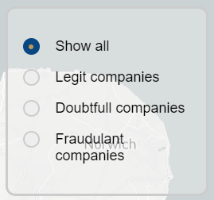

On the home page, you will find three buttons. One of them has brought you here. The first button brings you to the map, where you will find colored dots for every company in the database. More on this you will find in the next section on this page. The second button leads to a page on information about what makes companies more prone to illegal activities. If you want to find out more on what the basis for this application is, and what is taken into account and what not, this is a good place to look at. The third button lead you here: the how-to page. This is the digital guide for when you are lost or don't know how to do something. These information and how-to pages are also always shown at the top-right of every page. And if you want to go back to the home page, you just click on the home-icon at the top-left corner of the page, or on "Finding Fraud" at the top of the page.
The map page shows you a map, initially of The Netherlands, with three different colored dots on it:
On the left side of the page, you will find 13 buttons. These buttons determine the level of zoom is used for the map. So, if you click on The Netherlands, you will see The Netherlands in its entirety, but if you click on "Friesland", for example, you will see that the map zooms in on Friesland. This way, you can toggle between different provinces without having to zoom in by hand. If you want to zoom in even further, you can use the scrolling wheel on your mouse, or, if you have a touch pad or touch screen, you can use two fingers and spread them. Maybe these functions deem familiar, if you have used Google Maps before. You can also click on the map (or use your finger when handling a touch screen) and drag the map in any direction you want.
Once you have found a company that you want more information about, you can click on the dot. It will then show you a window above or under it, with information like the company's name, address, SBI and the website. This window can always be closed by clicking the little cross at the top-right of it or anywhere outside of the window.
At the top left on the map, you will see a white bar with the text "Search for a company". Here you can type in any company's name, and if it's in the database you will see the company listed underneath the bar. You can click on it or press enter when selected to go to this point on the map. It will be centered on your window, and zoomed in to street level.
 Under the search bar, there is a filter function box. Here you can click on one of the round checkmarks to set a filter. The options are to show all the companies, or just the ones with a green dot (Legit companies), the ones with a yellow dot (Doubtfull companies), or the ones with a red dot (Fraudulant companies).